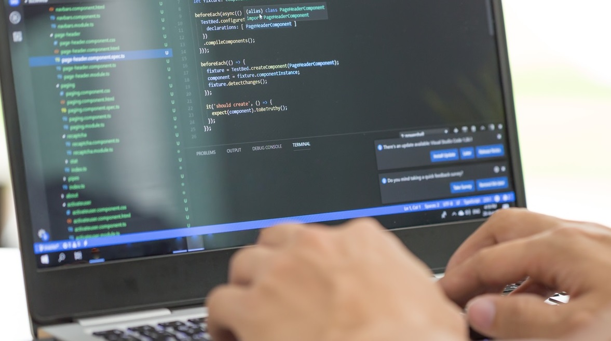

O curso de Análise e Desenvolvimento de Sistemas forma profissionais capazes de desenvolver, analisar, projetar, implementar
e atualizar sistemas de informação para diversos setores de atividades. Ao final do curso, a pessoa se qualifica para a criação de
sistemas informatizados, com conhecimento de programação dos mais diversos tipos e linguagens operacionais. Para isso, gostar
de cálculos e ter raciocínio rápido e lógico são fundamentais. Apesar de parecido com Sistemas de Informação, o curso de Análise
e Desenvolvimento de Sistemas oferece ao aluno uma experiência mais intensa na resolução prática de problemas. Os tipos de
formação para o curso de Análise e Desenvolvimento de Sistemas são: tecnólogo e pós-graduação.
e atualizar sistemas de informação para diversos setores de atividades. Ao final do curso, a pessoa se qualifica para a criação de
sistemas informatizados, com conhecimento de programação dos mais diversos tipos e linguagens operacionais. Para isso, gostar
de cálculos e ter raciocínio rápido e lógico são fundamentais. Apesar de parecido com Sistemas de Informação, o curso de Análise
e Desenvolvimento de Sistemas oferece ao aluno uma experiência mais intensa na resolução prática de problemas. Os tipos de
formação para o curso de Análise e Desenvolvimento de Sistemas são: tecnólogo e pós-graduação.
Fonte: Quero Bolsa.

PRINCIPAIS FUNÇÕES DESEMPENHADAS
O analista de sistemas é o profissional da área de Tecnologia da Informação que a partir de uma necessidade ou problema realiza soluções vantajosas para a empresa ou usuário. Esse profissional realiza seus trabalhos através do uso de sistemas e recursos computacionais de hardware e software. As principais atividades do analista de sistemas são:
- Desenvolver programas que melhorem o aproveitamento da máquina;
- Projetar e desenvolver aplicativos para microcomputadores e computadores de grande porte;
- Propor planos e sistemas de informatização na empresa;
- Analisar custos, viabilidade técnica, econômica e financeira para a implantação de processos de automação;
- Elaborar programas genéricos como processadores de texto, planilhas eletrônicas e programas de multimídia e controlar o fluxo de informações na empresa através da criação de aplicativos que facilitem este processo.